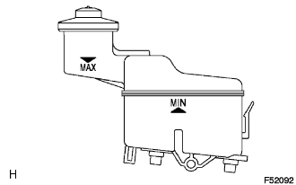

DẦU PHANH > KIỂM TRA TRÊN XE
Xem Phần Chuẩn Bị
Kích chuột vào đây
1. KIỂM TRA MỨC DẦU PHANH TRONG BÌNH CHỨA

Kiểm tra mức dầu và đổ thêm dầu phanh nếu cần.
Dầu:
SAE J1703 hay FMVSS No. 116 DOT3
GỢI Ý:
Đổ dầu đến giữa mức MIN và MAX của bình chứa.